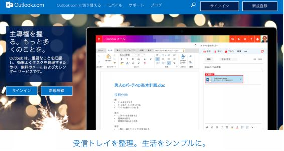

| IT初心者の事業者、中小企業が始めるIT活用入門: 「ITなんてサッパリ分からない！」なんて思っていませんか？ | |
| 立松直文 | |
| (2017) | |
【さあ、やってみましょう】何事も実践あるのみ！まずは小さな第一歩から。
特に日頃、日常業務に追われている中小企業の経営者、オーナーさんはなんとなく必要なことはわかっているのに、自社でどう使えばいいのか分からないのではないでしょうか？
本書はそんな事業経営者の一助になればとの思いから出版することにいたしました。
実はITというものは、分かる・分からないというよりも既に身の回りに浸透しきっています。ですから、すべてを学習して理解するよりもどちらかというと実践して慣れていただくのが一番の近道だと感じています。
まずはITという言葉の正体と、何故このテーマに触れることが大切なのかをお話して、それから実際にホームページやSNS（ソーシャルネットワーク）のアカウントの作成などにチャレンジしていきたいと考えています。
それでは最後までお付き合いください。
【2000年以降、情報量が一気に増えた！】
2000年にUCバークレー校のピーター・ライマンという人物が1999年末までに、人類が30万年かけて蓄積した全情報を計算したところ、12EB（エクサバイト）だっと報告されました。
引用 ： http://www.amy.hi-ho.ne.jp/kido/howmuchinfo.htm
この報告書を作った後に次の2001年から2003年までの3年間に貯蓄される情報量が、人類が30万年かけて貯蓄してきたすべての情報量をあっという間に追い抜いてしまうだろうと巻末で予言したそうです。
ライマンは2003年にも報告書を出しており、予想通り数年間の間に30万年分の情報を生産し、貯蓄した事実が公表されたとのことです。
2007年のデータでは、人間が処理できる情報量はほとんど変わっていないのに、世の中に出回っている情報（10年前と比べて）は410倍になっているというデータもあります。
一説によると、現代の1日の情報量は江戸時代の10,000倍の情報量であるとも言われていますが、人間の把握できる情報量を遥かに超えているのはみなさんも実感できるのではないでしょうか？。
あふれるメールメッセージ、通知、TVコマーシャル、動画、ツイートなど、
この衝撃波のような情報の増加を考えると、自分が必要としているお客様を見つけて、こちらを見てもらうことがどれほど価値が有ることかがわかるでしょう。
2017年現在はGoogleで検索しても答えがでてこない問題をどう解いていくかの時代の幕開けなのかもしれません。
今後、このような非常に大きな情報化の波に乗り切れない企業・個人事業主は取り残されデジタルデバイド、つまり情報格差が発生し社会的な課題になる可能性が出てきます。
そうならないためにも下記のようなITスキルを磨き上げて、活用できる状態まで経験知識を高める必要があると思います。
具体的には以下の４点です。
（1） 情報の効率的な処理スキル：情報洪水の中から必要な情報を短時間に探すことができる力
（2） 情報の効率的利用スキル：求めた情報を自分のために利活用できる力
（3） 情報の安全管理スキル：大切な情報を守ることができる力
（4） 情報の点検・監査スキル：大切な情報を管理ができる力
IT（あいてぃー）とは、情報技術・Information Technologyの文字を略したものです。
最近はICT（あいしーてぃー）（Information and Communication Technology）とも呼ばれていますが、意味はほぼおなじものを指します。
パソコンやスマートフォンはもちろん、インターネットや通信に関わる技術は総合的にITとよばれています。
最近話題のIOT（モノのインターネット）や、ドローン（無人航空機）、VR（仮想空間）、AR（仮想現実）、AI（人工知能）等もすべてこのITの範疇に含まれる言葉です。
ざっと考えただけでも以下のメリットが考えられます。
■仕事が早くなる、効率がアップする。
■地理的、時間的な制約を小さくできる。
■海外への情報発信、やり取りなどができる。
■マーケティング費用がほとんどかからなくなる。
■定型業務は自動化できる。
ITを活用することで従来人間が行っていた作業を機会に置き換え、仕事の効率アップができるようになります。これは事業のIT化の最大のメリットです。
そしてもうひとつの大きなメリットは、地理的、時間的な制約を小さくできることです。
その昔、インターネットが普及する前は大事な情報の確認なども、お互いに時間が合わなかったり、遠く離れた場所にいたりすると出来なかったりしていました。
現在はネットミーティングやグループウェア等の普及で完全にフェィス・トゥ・フェイスというわけではありませんが、それに近い形で打ち合わせをすることが出来ます。
また現在は電子メールが使えるので、たとえ深夜早朝でも相手の状況や時間帯を気にすることなく情報やメッセージを送ることができます。
お客様を集めるための取り組み＝マーケティングに関しても検索エンジンやSNSの登場で工夫次第で費用をかけずにPRをすることができます。
事業でITの活用を考えるのであれば、まずは以下の項目を準備していきましょう。順を追って説明していきます。
■インターネット回線
■スマートフォン、タブレット、パソコンなど
■情報を発信するためのSNSアカウント、ホームページ、ブログ
これがないと始まりません。昨今 の I T はほとんどの情報端末がインターネットにつながっており常時インターネットにつながっている「常時接続」のものが主流です。
□ スマートフォンの4G回線
□ ワイマックスなど高速無線回線
□ NTT提供のフレッツ回線他、通信各社の光回線
□ ケーブルテレビ等が提供する高速回線
□ 電力会社提供の高速回線
スマートフォンは基本ソフトや端末の種類によって大きく２つに分かれています。１つはアップル社
の
iPhon
e
（アイフォーン）ともう１つはグーグル社
の
Androi
d
（アンドロイド）です
。
201
3
年ごろから大幅に普及し現在ではインターネットの利用者数はパソコンからの利用者を超えています。
タブレットはスマートフォンよりも大きな画面で、パソコンよりも操作が簡単で動作が早い。代表的なものはiPadなどがある。
◇ 日本国内で6割シェアの主流スマートフォン。
◇ 直感的操作で子供～大人まで使いやすい。
◇ セキュリティ対策がしっかりしている。
◇ 世界各国のメーカーで設計開発・生産されている。
◇ 最新の機能をもった端末が多い。
◇ プログラム（アプリ）公開の自由度が高い。
◇ 画面の大きさがスマートフォンよりも大きく見やすいのでPC代わりに使ったり、電子書籍を見るときに便利。
◇ こちらもアップル社の（OS）形式と、グーグル社の形式がある。有名なのはiPadです。
事務処理やインターネットに接続して様々な作業ができる。
一般的に大きな画面やキーボードを備えておりプログラミングや書類作成などに必要。
ソーシャルネットワークサービス（インターネット上の交流を主な目的としたサービス）を略して「SNS」と呼ぶ。
人間関係をインターネット上で作ることができるが、利用するには「アカウント」という利用権（無料）を取得して使用する仕組みが一般的。
インターネット上で自社が自由に情報を発信できる場所のこと。
文字だけのものから、静止画、動画、360°動画と進化を続けている。問い合せフォームや経営理念、会社概要、電話番号、免許番号など必要な情報を掲載しておく必要がある。
□ 簡単な操作でネット上に日記や情報を記事として公開できる。
□ 無料で利用できるものが多いので気軽に使うことができる。
□ インターネットの検索に表示されやすい。
□ 主にスマートフォンなどで使うプログラムのこと。
□ ゲームや地図、コミュニケーション等、様々な目的のために作られる。
□ 有料・無料のものがある。
今までの説明で大まかにITとはなんのことなのか？と、ITでよく使われる言葉、技術の名前などは目にしていただけたかと思います。
それでは、実際にITを活用するためにはまずは何をすればいいのでしょうか？
メールアドレスは情報のやりとりには必須のツールです。
現在は無料で高機能なものが利用できるので、それらを使いましょう。
■ おすすめは、グーグルの提供する「Gmail」（無料）
メール機能の他、カレンダーやドキュメントなどの便利な機能が利用可能。他マーケティングに使える機能も基本無料で使える。
■ 持っておくと便利なのは、マイクロソフトのメールアドレス「Outlook」（無料）
マイクロソフトが提供する各種サービスを利用可能になる。
Windows10ではログイン時にこのアカウントを使うので利用機会も多くなると思われる。
■ ヤフーストアやヤフーオークションの利用を考える方は、「Yahooメール」（無料）Yahoo Japan IDを取得することで利用できます。
Yahoo!Japanの各種サービスを使う時に持っていると便利です。
インターネットで https://accounts.google.com/SignUp?hl=ja
にアクセスするか、検索で 「 Googl e アカウント 作成」などと検索すると表示されます。
表示されるフォームに沿って情報を入力していきましょう。
すべての情報を入力し終えてポリシーに同意するとメール機能他が利用できるようになります。
インターネットで https://www.microsoft.com/ja-jp/outlook-com/

にアクセスするか、検索で 「 Outloo k アカウント作成」などと検索すると表示されます。
「新規登録」を選択した後、こちらも表示されるフォームに沿って情報を入力していきましょう。
すべての情報を入力し終えてポリシーに同意するとメール機能他が利用できるようになります。
インターネットで https://mail.yahoo.co.jp/promo/
にアクセスするか、検索で 「 Yaho o メールアドレス取得」などと検索すると表示されます。
「Yahooメールアドレスを取得する」を選択し、こちらも表示されるフォームに沿って情報を入力していきましょう。
すべての情報を入力し終えてポリシーに同意するとメール機能他が利用できるようになります。
□ ホームページよりも情報を発信するのが早くて簡単。
□ 実名で実際の人間関係を活かして始めるなら「Facebook」（無料）
□ 拡散性、話題性のある情報を使うなら「Twitter」（無料）
□ 動画などで消費者にPRしたいならYoutube（無料）
faceboo k のホームページからアカウントの作成を行いことができます。
スマートフォンアプリからもアカウントの作成は可能です。
フェイスブックは基本実名制 の SN S ですので、ユーザー登録時にはご自分の名前を正確に登録しましょう。
ご自身の名前やプロフィールによってつながったり推薦される友達の内容が変わります。
Twitte r のホームページ、またはスマートフォンアプリ方アカウントの作成が可能です。
Twitte
rは
Faceboo
k
と違い、匿名で
も
O
K
なため、ビジネス・個人どちらでも自由にアカウントが作成できます。
拡散性が高く手軽なことから若年層のスマートフォンユーザー中心に人気のあ
る
SN
S
です。
Instagra
m
は基本スマートフォンアプリからアカウントを作成するのが一般的です。画像が主体
の
SN
S
となるため、他サイトへのリンク等の集客機能はあまりありませんが、イメージ発信を得意とされる事業者様には大きな武器となりそうです。
最後に、
各
SN
S
アカウントを作れたら自分のアカウントの情報をお友達やお知り合いに知らせてつながりましょう。
■ GoogleアカウントやFacebookアカウントは他のサイトでも利用する際ログインするときによく使われるので重要です。
■ GoogleアカウントはGoogleのいろんなサービスを使うためのパスポートなので重要です。
■ FacebookアカウントはFacebook企業ページなど集客活用に必要・重要なものです。
詳細の対策は「困ったことになる前に知っておきたいこと」にて後述します。
□ ネットで集まった人たちに自社の情報を分かりやすくまとめて公開しましょう。
□ 簡単に連絡が取れるように会社の情報を整理し見直しておきましょう。
□ SNSのプロフィールも同じく分かりやすく連絡が取りやすいように整理したものを設定しておきましょう。
◆【会社名・事業名】
◆【事業内容・取扱製品】
◆【代表者】
◆【住所】
◆【電話番号】
◆【ホームページ・ブログ・SNSアカウント】
◆【アクセス方法】
上記のグーグルドライブ、ワンドライブはクラウドサービスの一種です。
クラウドサービスとは一般的にネット上にあるコンピューター資源を利用することをいい、これら２つのサービスに関してはデータの保存やアプリケーションの利用が含まれています。
両者とも一定の制限内であれば無料できるため、ユーザー数も数多く、様々なアプリケーションや情報が存在します。
昨今のクラウドサービスはセキュリティ機能も非常に充実したものが多いので個人情報などのデータ漏洩、紛失、破損などリスクの高いUSBメモリを持ち歩くよりも安全性は高いと思われます。
□ 無料で利用できる。
□ 文章、表計算、プレゼン資料などを無料で作成、保存できる。
□ アドオンというプログラムを使うと便利な機能を簡単に利用できる。
ドキュメント・スプレッドシート、スライドなどインターネット上でオフィスアプリケーションも利用可能になっている。
□ 無料で利用できる
□ スマートフォンの写真を自動・容量無制限でバックアップ可能。
□ 人工知能による分類・検索機能が使える。
写真や動画の保存容量に制限がないので少ない容量の端末でも記憶容量不足不安がなくなる。
□ 無料で利用できる。
□ マイクロソフトのオフィスのファイルなどを保存しておくことができる。
□ パソコンにオフィスのソフトが入っていなくてもファイルを見たり・書き換えたりすることができる。
マイクロソフトオフィスの最新版やWindows10のパソコンでは基本ソフトに同期機能が組み込まれており、データ紛失やデータ破壊などの不安から解放される。
▽ノートに書くと忘れてしまう・・・
「どれがどのパスワード？」
「あのパスワードはどこに書いてあったっけ？」
▽「書いてあるパスワードが古くて使えない・・・」
数多くのサービスを使いこなすには、サービスの数だけIDやパスワードを使いこなす必要があり、あまりにも増えすぎると人間の記憶やアナログ的なパスワード管理方法にも限界があります。
そこでおすすめしたいのが、スマートフォン、クラウドサービスといったデジタルツールを利用してパスワードを管理する方法です。
デジタルツールであれば、セキュリティ面のしっかり確保したものを選べば安心ですし、「今、必要！」なシーンでも検索することができるので短時間で必要とする情報にたどり着けるようになります。
これらのサービスには基本的に「マスターパスワード」という1つだけ大事のものを覚えていただければいいようになっています。
それさえも煩わしい！という方には、最近のスマートフォンは指紋などの生体認証機能を備えたものが多いので、指紋を合わせるだけで各種パスワードにアクセスできるスマートフォン用パスワード管理アプリも登場しています。
また、バックアップ機能を備えたものが多いので万が一管理する端末が壊れても安心です。
パスワード管理帳などアナログ的な管理と併用することでより管理がしやすくなるかと思います。
それではデジタルでのパスワード管理の方法を紹介していきましょう。
iPhoneの方は、標準で入っている「メモ」は鍵をかけることができるので、アカウントを作ったらすぐにメモにパスワードを書いておきましょう。
Androidを使っている人は「Google Keep」というメモアプリ、またはGoogleドキュメントを利用しましょう。
メモするときには「なんのパスワードか？」も併記しておくと後で検索ができて便利です。
最新のブラウザソフトには、パスワード管理機能が装備されています。
それらを利用するのは楽で大変便利ですが、ブラウザでは少し不安という方もいらっしゃるかと思います。
そういう方には専用のパスワード管理アプリがおすすめです。
スマートフォンアプリに対応しているものがほとんどです。
iPhone5S以降の機種やAndroidの新型の機種の場合、指紋で管理ができるので大変便利に使えます。以下、代表的なものを紹介します。
https://www.lastpass.com/ja
大切なパスワードを強力な暗号化機能や指紋認証、２段階認証（スマホアプリ）の機能でしっかり守る。基本利用は無料なのが良い。
パスワードの暗号化機能、スマホアプリにて指紋認証によるロックに対応。クラウドサービスへのバックアップも対応している。
ウイルス対策ソフトでおなじみのトレンドマイクロ製のパスワードマネージャー。有料版のみの提供で、月額・年額の料金体系
最近のスマートフォンは多機能・高機能化が進み、一部端末ではパソコンの性能を凌駕するようなものまで登場しています。
その理由は世界中の会社でスマートフォンが開発されており、各社でしのぎを削る開発競争が起こっているからです。
その端末の進化に消費者側が若干、ついていけていない印象が少なからずともあります。
スマートフォンに関しての情報やはり開発元・販売元に問い合わせるのが一番正確で適切な解決策に導いてもらえます。
疑問を持ったらまずは携帯各社のサポートサービスに相談しましょう。
特にアンドロイド携帯の場合は、機種ごとに操作も違うため、販売元に相談する方法が最も確実です。
iPhoneは携帯各社ほか、アップルのホームページでもサポートが受けられます。
携帯各社で契約した際の決められた通信料の上限を超えてしまうと速度制限などがかかり、「肝心な時」に使えず困ってしまうこともあります。
「もうすぐ販促キャンペーンをやろうとしていたのに・・・」
「お客様からの問い合わせに返信するのに、全然通信できない」などの状況になってしまうのは避けたいところです。
動画などをスマホで取り扱うと、すぐに通信料の上限に達してしまうので気をつけましょう。（動画は写真に比べてデータが大きい。）
自宅にインターネットがあればWi-Fi装置を使うようにしましょう。
外出先では公衆無線LANの利用ができるようにしておきましょう。
端末や、プログラムが進化して簡単操作になる。
人工知能が進化するのに伴って面倒で複雑な作業は人間がやる必要がなくなる。
ウェアラブル（着る）端末やメガネ型など、身につけて行動するだけで動作して仕事をする道具も出てきている。
今は各種の操作や理解が難しいものが多いのも事実です。
しかし、今後それらのハードルはIT技術の発展によって無くなる可能性が大きいので、身構えずご自身の事業にどう使っていくか想像できるレベルまで落とし込ように情報収集のアンテナを張っておくことが重要です。
■ 現在は検索エンジン・ホームページが起点ではないことがほとんどです。（SNSの併用・活用が必須です）
■ 事業の立ち上げ段階でホームページに過度なコストをかけるのはおすすめできません。（小さく始めて大きく育てていく）
■ 自社の想い・理念や情報を発信することは経営者であるあなた自身にしか出来ませんので、最初は自分で取り組めるものを使いましょう。（すべて丸投げでは思い通りのホームページにはならないでしょう。）
まずは無料で利用できるホームページ作成サービスを利用してリスクを最小限にして御社の情報発信、ブランドイメージの発信を試みましょう。
次に現在代表的な無料ホームページ作成サービスを紹介します。
洗練されたデザインが多く、予約機能や画像エディタもあり、多機能。スマートフォンのデザインにも対応しています。
http://ja.wix.com
簡単操作でシンプルで見栄えの良いデザインのホームページを作ることができます。
KDDIとの提携によりサポート側のクオリティが高かったり補足情報が豊富にあります。
https://jp.jimdo.com
簡単な１枚のページで構成されたページを作るなら最も効率が高い。
テンプレートから選択して必要な情報を入力するだけで公開することができます。
https://peraichi.com
以上、紹介してきた無料ホームページサービスの他にも多数類似のサービスが利用可です。
...ということで、道具は色々あるので、心配する必要はありません。
それよりも気にしなければいけないのは、
「
どんな目的でホームページを作るのか」
それを明確にすることです。
主なホームページ作成の目的としては次のようなものが一般的です。
◯ 会社案内
◯ 認知向上
◯ 問い合わせ窓口
◯ 見込み客の発掘
◯ 販促・取引目的
□ 目的を見返しながら、再度、アクセスしてきたお客様にはどんな自社の情報が必要かを考えて書き出してみましょう。
□ お客様になったつもりで、どんな情報が見たいかを書き出してみましょう。
□ 日本語表記ルールブックなどが発売されているので正しい日本語を表記するために参考にしましょう。
□ 実際にお客様に触れる機会が多い方なら、見て欲しいお客様に理解されやすい言葉を使いましょう。
（方言なども織り交ぜると親近感が出ます。）
御社の仕事風景をキレイで解像度の高い画像として用意しましょう。
プロのカメラマンに依頼することになり、それなりの費用はかかってきますが、クオリティの違いは明確です。
P R に使う写真は御社のイメージが定着しやすい最も重要な要素です。
必要なものは経費を惜しまずしっかり予算を確保しましょう。
もしも、どうしても予算が取れない、急いでいて写真を用意する時間がないという方は以下写真・動画無料素材のサイトを活用して加工して利用すると良いかと思います。
無料写真・画像素材サービス
→写真AC・タダピク・Pixabay・いらすとや
無料動画素材サービス
→ 動画素材.com、ニコニ・コモンズ他
注意点としては、あまりにも人気の素材サイトや人物モデルの写真を使っていると、他サイトとかぶったりすることも多いので、無料素材を使う場合には自社の認識、イメージの醸成に悪影響を及ぼしそうな恐れのある写真は利用を避けましょう。
本書の内容はいかがでしたでしょうか？
ITとは何なのか？というテーマからSNSアカウントの作成、ホームページの作成まで一気に進めてきましたが、もちろん事業におけるITの活用シーンはこれだけではありません。
インターネットにとどまらず、工業分野や農業分野においてもIOT（モノのインターネット）の活用は大きな存在感を出してきていますし、昨年から続くAIブームは一気に人工知能の存在を私達の実生活にも実感させるものになってきました。
今後御社がITを活用する際にはもうホームページやSNSの活用は１つ前の世代の古いやり方になっている可能性もありますが、筆者はITの本質的な考え方というのは「 人間の仕事の生産性を高めること 」にあると考えています。
扱うものが何であれ、正しく使う方法を理解して、効率よく使っていければ必ず御社事業の潤滑油となってくれると信じています。
最後までお読み頂きましてありがとうございました。
愛知県海部郡で生まれ育ち 、 200 3年1 月 （旧）西川印刷に て we b ディレクターとしてウェブ販促業務に従事。
200 9年9 月 ホームページなどデジタル広告、集客代理店として創業。
■デジタル集客（検索エンジン・リスティング広告・facebook広告・アプリ開発）サイト運営プロデュース
■セミナー企画・講師...一般企業、商工会様等支援機関でのウェブ集客セミナーの企画・講師、愛知県よろず支援拠点コーディネーター、中小機構アドバイザー等
【公式ウェブサイト】 https://tatematsu.jp/